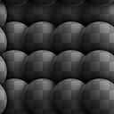
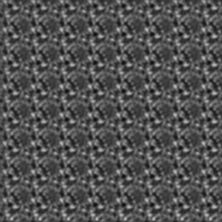

Make It Tile Patch


Make It Tile Patch (Grayscale)
In: Filters/Tiling
Complex
Description
This node is a grid-based semi-random tiler. It takes an input patch and stamps it around, attempting to turn it into a tiling image without too many repetitions, based on your settings.
Useful for when you have a small patch of texture and want to create a larger scale, tiling texture from it.
Keep in mind that this is different from Make-It-Tile Photo, which mainly fixes up edges.
To do this with an entire material, see Smart Auto Tile.
Parameters
- Mask Size: 0.0 - 1.0
Size of the round mask used when stamping the patch. - Mask Precision: 0.0 - 1.0
Falloff/smoothness precision of the mask. - Mask Warping: -100.0 - 100.0
Introduces warping at mask edges. Good for avoiding smooth, undefined transitions between patches. - Pattern size width: 0.0 - 1000.0
Changes the width of the patch non-uniformly. - Pattern size height: 0.0 - 1000.0
Changes the height of the patch non-uniformly. - Disorder: 0.0 - 1.0
Introduces translational randomness, slightly shifting patches around. - Size Variation: 0.0 - 100.0
Introduces size variation for the mask. - Octave: 0 - 6
This is the main control that determines the overal size. - Rotation: -360.0 - 360.0
Pre-rotates the patch. - Rotation Variation: 0.0 - 360.0
Introduces random rotation for every patch stamp. - Background Color: (Color value)
Sets the background color for areas where no patch appears. - Color Variation: 0.0 - 1.0 (Color Version Only)
Introduces color variation per patch. - Luminosity Variation (grayscale version only)
Introduces luminosity variation per patch.
Example Images
